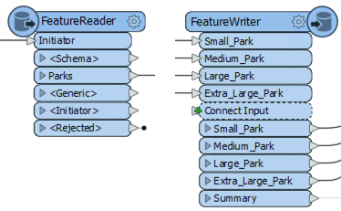
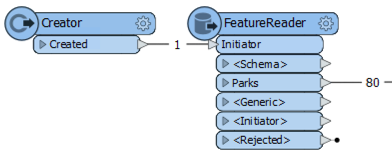
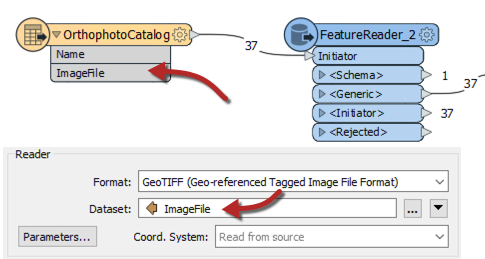
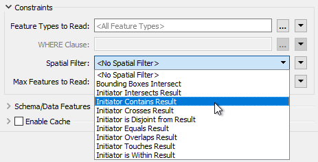
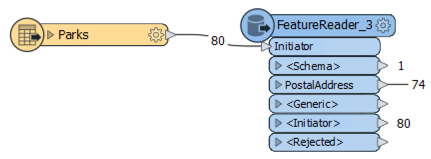
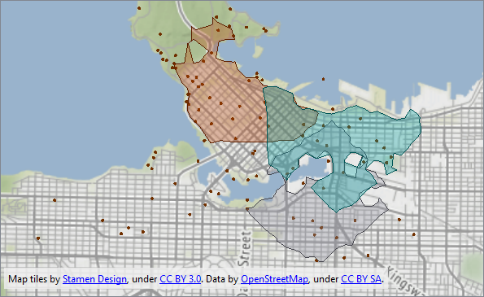

After completing this lesson, you’ll be able to:
Besides being able to read data with a reader and writer, FME has transformers specifically designed to read and write data. These are the FeatureReader and FeatureWriter transformers.

The advantage of these transformers is that they have an input port (FeatureReader) and output ports (FeatureWriter). So where a reader is always the first action in a workspace, and a writer is always the last, a FeatureReader and FeatureWriter can read and write data at any point in a translation.
The FeatureReader is set up with parameters to read a specific dataset:
Any feature that enters the Initiator input port will cause the data to be read, like here, where a Creator supplies a null feature to trigger reading:

The Creator creates a single feature that triggers the FeatureReader to read a dataset of park features. If the Creator created ten features for some reason, then the data would be read ten times, resulting in 800 output features!
The FeatureReader has output ports that correspond to feature types. You can control these ports by expanding the Output > Output Ports section of the parameters.

You have three options:
The FeatureReader contains several output ports.
A common case with the FeatureReader is to supply the dataset to read as an attribute:

This example includes both reader and FeatureReader. The workspace reads a Shapefile dataset containing an index of orthophoto datasets. Each feature in the Shapefile is a polygon representing the orthophoto boundary with an attribute that points to a GeoTIFF file containing that orthophoto.
The FeatureReader is set up to use the attribute as the filename to read. The result is that 37 features are read from the Shapefile, and the equivalent 37 GeoTIFF images exit the FeatureReader.
The source features do not need to be spatial. For example, an Excel spreadsheet with a list of files to read is just as valid.
A key parameter in the FeatureReader sets a spatial filter on the data being read:

The Initiator Contains Result filter (for example) means that features output the FeatureReader if their geometry falls inside the geometry of the initiator feature. For example, here:

A dataset of parks supplies input features that trigger reading from a database address table. The FeatureReader applies a spatial filter so that it only reads addresses inside a park.
The FeatureWriter is set up with parameters to write a specific dataset:

The dialog allows the definition of the format and dataset to write, plus the feature types that are to be written and their attributes. In short, the parameters, settings, and schema definition required for a writer appear in this single dialog.
You can add more feature types using the plus button. Note that this will not, by default, create more output ports. Instead, similar to the FeatureReader, you can control the output ports under the Output Ports section at the bottom of the dialog.
Feature types can be manually defined within the dialog itself or can be added automatically by connecting to the Connect Input input port:

Notice also that an important part of the FeatureWriter is that its exit ports can be connected to other transformers for further processing. In the above screenshot, parks data is written, and a single summary feature triggers an Emailer transformer. The Emailer sends a copy of the data to a user.
The data is then used as the input to a FeatureReader to read all addresses that fall inside a park, the results of which are then written by a FeatureWriter.
You'll need this image to answer one of the quiz questions below.

Map tiles by Stamen Design, under CC BY 3.0. Data by OpenStreetMap, under CC BY SA.